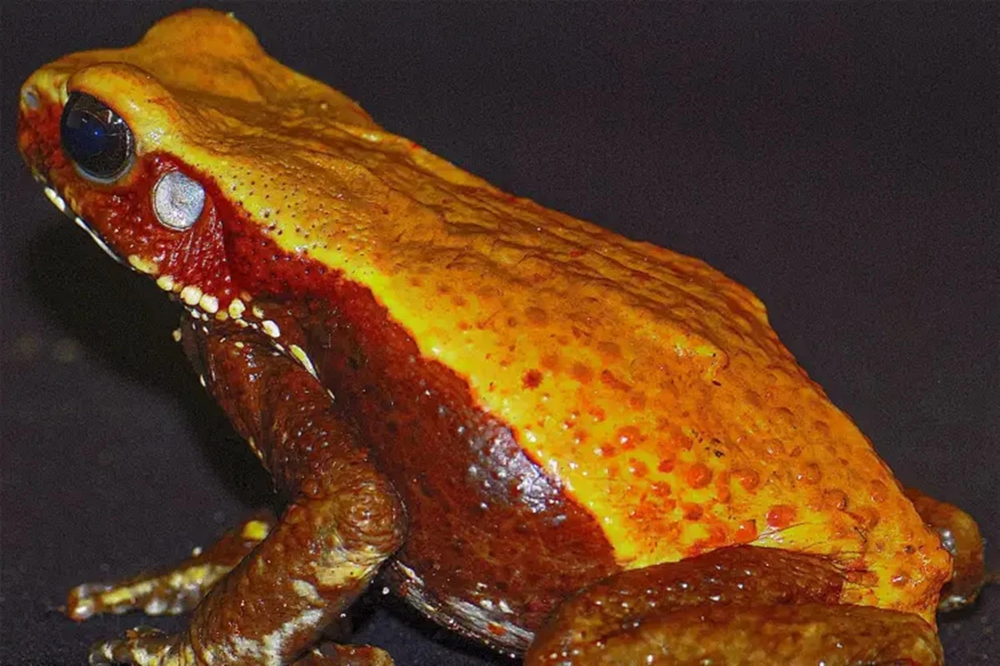
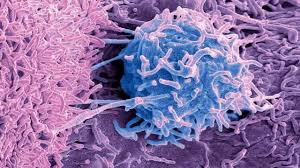

Suspiro
News
saúde
Aqui você acompanha notícias, projetos e informações sobre MEIO AMBIENTE no Brasil e no mundo
.jpeg) fatosdesconhecidos
fatosdesconhecidosDescoberta pode curar diabetes tipo 1
Uma descoberta impressionante pode mudar tudo: cientistas da Universidade de Stanford conseguiram curar o diabetes tipo 1 em ratos, sem efeitos colaterais. O avanço traz esperança real de uma cura para milhões de pessoas.
.jpg) Foto: Renato
Rodrigues/Comunicação Butantan
Foto: Renato
Rodrigues/Comunicação ButantanVacina do Butantan avança contra dengue
Uma vacina criada pelo Instituto Butantan pode mudar a luta contra a dengue. Com apenas uma dose, ela protege por até 5 anos e tem alta eficácia contra casos graves. Testada em milhares de pessoas, a vacina se mostrou segura e eficiente, trazendo esperança para reduzir internações e salvar vidas no Brasil.
Parkinson regenerativo no Japão
O Japão aprovou o Amchepry, primeiro tratamento para Parkinson com células-tronco iPS, capaz de restaurar células cerebrais perdidas e reduzir sintomas motores. Testes em pacientes mostraram melhora sem efeitos graves uma revolução para 10 milhões de pessoas com Parkinson no mundo.
.jpeg) chatgpt
chatgptRins se curando sozinhos em estudo pioneiro
Pesquisadores em Cingapura conseguiram regenerar rins danificados bloqueando a proteína IL-11. Em modelos pré-clínicos, os órgãos recuperaram função filtradora e massa saudável. O avanço promete tratamentos que vão além da diálise ou transplante, trazendo esperança para milhões com doença renal crônica.
Lesão medular: jovem volta a mexer pernas
No Espírito Santo, Vinícius Brito, 24 anos, voltou a mover as pernas após receber polilaminina combinada com fisioterapia e eletroestimulação. A proteína, criada no Brasil, reconstrói os caminhos neurais e aumenta drasticamente a chance de recuperação motora – um marco para pacientes com trauma medular

metropolesVeneno de sapo pode virar antibiótico
Pesquisadores do Instituto Butantan descobriram substâncias no veneno do sapo-cururu amazônico com potencial para combater bactérias resistentes, incluindo uma proteína inédita chamada BASP1.
 Foto: Provention Bio
Foto: Provention BioNovo remédio pode frear diabetes tipo 1
A Anvisa aprovou o Tzield, medicamento que desacelera a progressão do diabetes tipo 1 em crianças e adolescentes, ajudando a manter a produção de insulina por mais tempo e reduzindo riscos de complicações futuras.

Getty ImagesBactéria que destrói tumores
Cientistas canadenses usam a bactéria Clostridium sporogenes, modificada geneticamente, para atacar tumores pelo interior, explorando regiões sem oxigênio e abrindo caminho para novos tratamentos de câncer.